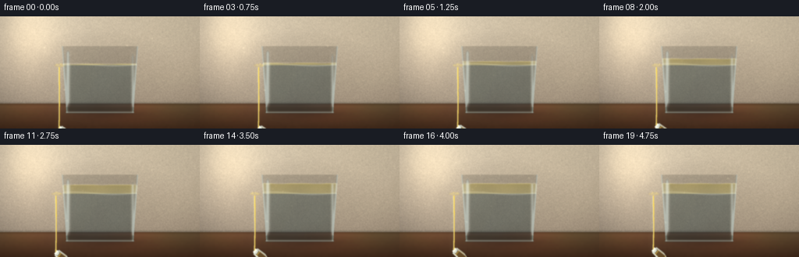
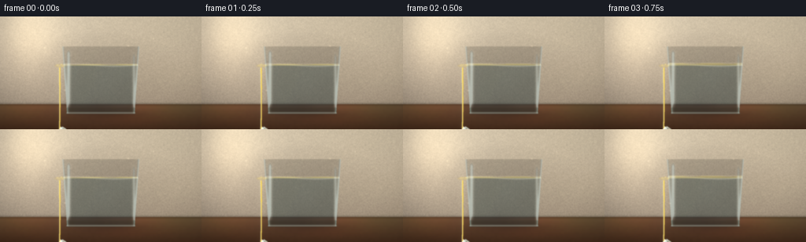
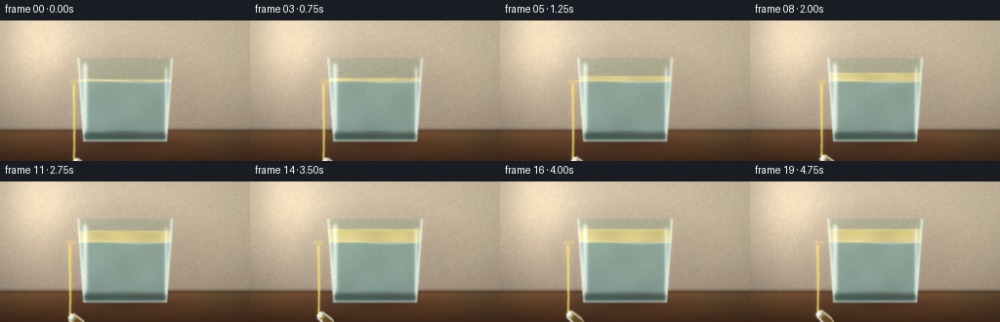
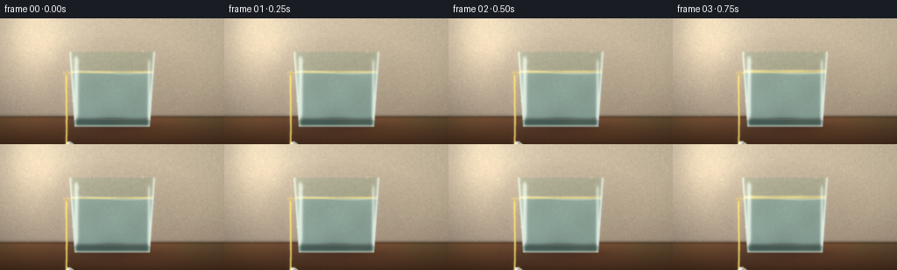

CODING AGENTS AS PIXEL WORLD MODELS
traex/DeepSeek-V4.1-Flash · material_0023
点击播放 · 原生 RGB 像素
逐轮保存的候选
回放视频、检查图与代码变化。
每份候选均可单独播放。实际图片检查记录在下方工具轨迹中。
候选 01播放与检查图
点击播放 · 原生 RGB 像素


展开代码变化
--- 上一保存版本
+++ 本次保存版本
@@ -0,0 +1,368 @@
+from pathlib import Path
+
+import cv2
+import numpy as np
+from PIL import Image, ImageDraw, ImageFilter, ImageFont
+
+import artifact_io
+
+
+W, H = 256, 144
+SS = 4
+RW, RH = W * SS, H * SS
+N = 20
+CASE_DIR = Path(__file__).resolve().parent
+
+
+def smoothstep(a, b, x):
+ t = np.clip((x - a) / (b - a), 0.0, 1.0)
+ return t * t * (3.0 - 2.0 * t)
+
+
+def rgba_layer(color, alpha):
+ arr = np.empty((*alpha.shape, 4), dtype=np.uint8)
+ arr[..., :3] = color
+ arr[..., 3] = np.clip(alpha * 255.0, 0, 255).astype(np.uint8)
+ return Image.fromarray(arr, "RGBA")
+
+
+def gradient_background():
+ yy, xx = np.mgrid[:RH, :RW].astype(np.float32)
+ y = yy / RH
+ x = xx / RW
+ rgb = np.empty((RH, RW, 3), dtype=np.float32)
+
+ # Warm stone wall with a softly lit left edge.
+ rgb[..., 0] = 180 - 54 * y + 12 * x
+ rgb[..., 1] = 167 - 55 * y + 11 * x
+ rgb[..., 2] = 145 - 48 * y + 8 * x
+ rgb += (
+ 19.0
+ * np.exp(-((x - 0.12) / 0.34) ** 2)[..., None]
+ * (1.0 - 0.55 * y)[..., None]
+ )
+
+ # Fine plaster grain and broad mottling keep the backdrop from looking flat.
+ rng = np.random.default_rng(12)
+ noise = rng.normal(0, 1, (RH // 4, RW // 4)).astype(np.float32)
+ noise = cv2.resize(noise, (RW, RH), interpolation=cv2.INTER_CUBIC)
+ rgb += noise[..., None] * np.array([4.2, 3.8, 3.2], np.float32)
+ mottle = cv2.GaussianBlur(rng.normal(0, 1, (RH, RW)).astype(np.float32), (0, 0), 28)
+ mottle /= max(1.0, np.std(mottle))
+ rgb += mottle[..., None] * np.array([5.0, 4.2, 3.4], np.float32)
+
+ # Dark tabletop and its warm reflection.
+ table_y = 112 * SS
+ table = yy >= table_y
+ depth = np.clip((yy - table_y) / (RH - table_y), 0, 1)
+ wood = np.stack(
+ [
+ 103 - 38 * depth + 8 * np.sin(xx * 0.011) * (1 - depth),
+ 72 - 31 * depth + 5 * np.sin(xx * 0.008 + 1.0) * (1 - depth),
+ 50 - 24 * depth,
+ ],
+ axis=-1,
+ )
+ grain = cv2.GaussianBlur(
+ rng.normal(0, 1, (RH // 2, RW // 2)).astype(np.float32), (0, 0), 2.2
+ )
+ grain = cv2.resize(grain, (RW, RH), interpolation=cv2.INTER_CUBIC)
+ wood += grain[..., None] * np.array([4, 3, 2], np.float32)
+ rgb[table] = wood[table]
+ seam = np.exp(-((yy - table_y) / (2.0 * SS)) ** 2)
+ rgb *= (1.0 - 0.20 * seam[..., None])
+
+ vignette = np.clip(1.18 - 0.45 * ((x - 0.52) ** 2 + (y - 0.46) ** 2), 0.68, 1.12)
+ rgb *= vignette[..., None]
+ return np.clip(rgb, 0, 255).astype(np.uint8)
+
+
+def liquid_scene(t):
+ """Return a supersampled RGBA scene for time t in seconds."""
+ yy, xx = np.mgrid[:RH, :RW].astype(np.float32)
+ rgb = np.zeros((RH, RW, 3), dtype=np.float32)
+ alpha = np.zeros((RH, RW), dtype=np.float32)
+
+ # Glass tumbler geometry. Perspective makes the lower rim wider.
+ cy = 97.0 * SS
+ half_top = 49.0 * SS
+ half_bottom = 43.0 * SS
+ y_top = 38.0 * SS
+ y_bottom = 124.0 * SS
+ v = np.clip((yy - y_top) / (y_bottom - y_top), 0, 1)
+ half_w = half_top * (1 - v) + half_bottom * v
+ inside = (np.abs(xx - 128 * SS) < half_w) & (yy > y_top) & (yy < y_bottom)
+ edge_x = half_w - np.abs(xx - 128 * SS)
+ side_edge = np.exp(-(edge_x / (2.3 * SS)) ** 2) * inside
+ bottom_edge = np.exp(-((yy - y_bottom) / (2.0 * SS)) ** 2) * (
+ np.abs(xx - 128 * SS) < half_bottom + 3 * SS
+ )
+
+ # Back wall seen through the clear glass, slightly displaced and cooled.
+ bg = gradient_background().astype(np.float32)
+ disp = 0.9 * SS * np.sin((yy - y_top) / (14.0 * SS))
+ map_x = np.clip(xx + disp, 0, RW - 1).astype(np.float32)
+ map_y = np.clip(yy - 2.0 * SS + 0.4 * SS * np.sin(xx / (9 * SS)), 0, RH - 1).astype(np.float32)
+ warped = cv2.remap(bg, map_x, map_y, cv2.INTER_LINEAR)
+ glass_tint = np.array([0.88, 0.96, 0.94], np.float32)
+ glass_alpha = 0.17 * inside
+ rgb += warped * (glass_alpha[..., None] * glass_tint)
+ alpha += glass_alpha
+
+ # Water body: blue-green, clearer near the front and darker at the base.
+ water_top = 62.0 * SS
+ water = inside & (yy >= water_top)
+ depth = np.clip((yy - water_top) / (y_bottom - water_top), 0, 1)
+ water_col = np.stack(
+ [
+ 96 + 18 * depth,
+ 149 + 13 * depth,
+ 155 + 10 * depth,
+ ],
+ axis=-1,
+ )
+ caustic = (
+ 8 * np.sin(xx / (12.0 * SS) + yy / (9.0 * SS) + t * 1.2)
+ + 5 * np.sin(xx / (6.5 * SS) - yy / (14.0 * SS) - t * 0.8)
+ )
+ water_col += caustic[..., None] * np.array([0.45, 0.65, 0.62])
+ water_col *= (1.0 - 0.20 * np.clip((yy - 100 * SS) / (30 * SS), 0, 1))[..., None]
+ water_a = 0.34 * water
+ rgb = rgb * (1 - water_a[..., None]) + water_col * water_a[..., None]
+ alpha = alpha * (1 - water_a) + water_a
+
+ # Thin white meniscus at the water line.
+ line_y = water_top + 1.4 * SS * np.sin((xx - 128 * SS) / (17 * SS) + 0.5)
+ meniscus = np.exp(-((yy - line_y) / (0.95 * SS)) ** 2) * inside
+ rgb = rgb * (1 - 0.42 * meniscus[..., None]) + np.array([221, 235, 229]) * (
+ 0.42 * meniscus[..., None]
+ )
+
+ # Coconut oil accumulates as a pale golden layer above the water.
+ pour_t = np.clip(t / 4.5, 0, 1)
+ oil_thick = (1.1 + 11.5 * smoothstep(0.0, 0.80, pour_t)) * SS
+ oil_top = water_top - oil_thick
+ oil = inside & (yy >= oil_top) & (yy < water_top + 0.6 * SS)
+ ripple = 0.8 * SS * np.sin((xx - 128 * SS) / (7.5 * SS) + t * 5.0)
+ oil = oil & (yy >= oil_top + ripple)
+ oil_grad = np.clip((yy - oil_top) / np.maximum(oil_thick, 1), 0, 1)
+ oil_col = np.stack(
+ [
+ 235 + 7 * oil_grad,
+ 210 + 13 * oil_grad,
+ 112 + 30 * oil_grad,
+ ],
+ axis=-1,
+ )
+ oil_col += (7 * np.sin(xx / (8 * SS) + t * 4.0))[..., None] * np.array([1.0, 0.9, 0.45])
+ oil_a = 0.62 * oil
+ rgb = rgb * (1 - oil_a[..., None]) + oil_col * oil_a[..., None]
+ alpha = alpha * (1 - oil_a) + oil_a
+ oil_line = np.exp(-((yy - oil_top) / (0.8 * SS)) ** 2) * (
+ np.abs(xx - 128 * SS) < half_top - 2 * SS
+ )
+ rgb = rgb * (1 - 0.50 * oil_line[..., None]) + np.array([255, 238, 157]) * (
+ 0.50 * oil_line[..., None]
+ )
+
+ # Curved glass highlights and dark refracted sides.
+ left_glint = np.exp(-((xx - (128 * SS - half_top + 8 * SS)) / (2.4 * SS)) ** 2)
+ left_glint *= smoothstep(y_top + 2 * SS, y_top + 10 * SS, yy) * (1 - smoothstep(107 * SS, 119 * SS, yy))
+ right_glint = np.exp(-((xx - (128 * SS + half_top - 7 * SS)) / (1.8 * SS)) ** 2)
+ right_glint *= smoothstep(43 * SS, 53 * SS, yy) * (1 - smoothstep(110 * SS, 120 * SS, yy))
+ rim_glint = side_edge * 1.15
+ glass_light = np.clip(left_glint * 1.15 + right_glint * 0.82 + rim_glint, 0, 1)
+ rgb = rgb * (1 - 0.72 * glass_light[..., None]) + np.array([236, 247, 238]) * (
+ 0.72 * glass_light[..., None]
+ )
+ alpha = np.maximum(alpha, 0.72 * glass_light)
+
+ # Heavy base with a bright elliptical foot.
+ base_band = inside & (yy > 116 * SS)
+ rgb[base_band] *= np.array([0.72, 0.83, 0.82])
+ alpha[base_band] = np.maximum(alpha[base_band], 0.30)
+ foot = np.exp(-((yy - y_bottom + 0.8 * SS) / (1.3 * SS)) ** 2) * (
+ np.abs(xx - 128 * SS) < half_bottom + 1 * SS
+ )
+ rgb = rgb * (1 - 0.65 * foot[..., None]) + np.array([219, 234, 222]) * (
+ 0.65 * foot[..., None]
+ )
+ alpha = np.maximum(alpha, 0.65 * foot)
+
+ # Cast shadow and warm transmitted light on the wood.
+ shadow_x = (xx - 137 * SS) / (57 * SS)
+ shadow_y = (yy - 126 * SS) / (8.5 * SS)
+ shadow = np.exp(-(shadow_x**2 + shadow_y**2) * 1.4)
+ shadow *= (yy > 116 * SS)
+ # Draw the shadow behind the vessel by compositing this layer first.
+ return rgb, alpha, shadow
+
+
+def add_ellipse_layer(base, center, radii, fill, blur=0):
+ layer = Image.new("RGBA", (RW, RH), (0, 0, 0, 0))
+ draw = ImageDraw.Draw(layer)
+ cx, cy = center
+ rx, ry = radii
+ draw.ellipse((cx - rx, cy - ry, cx + rx, cy + ry), fill=fill)
+ if blur:
+ layer = layer.filter(ImageFilter.GaussianBlur(blur))
+ base.alpha_composite(layer)
+ return base
+
+
+def draw_oil_vessel(base, t):
+ # A tilted, clear glass cruet with warm coconut oil.
+ pivot = np.array([207.0 * SS, 47.0 * SS])
+ angle = np.deg2rad(-53.0 + 4.0 * smoothstep(0.0, 4.7, t))
+ c, s = np.cos(angle), np.sin(angle)
+
+ def xf(points):
+ q = np.asarray(points, dtype=np.float32)
+ q -= pivot
+ out = np.stack(
+ [q[:, 0] * c - q[:, 1] * s, q[:, 0] * s + q[:, 1] * c], axis=-1
+ )
+ return out + pivot
+
+ body = xf([(186, 7), (222, 6), (225, 54), (219, 75), (189, 75), (183, 53)])
+ neck = xf([(195, 4), (212, 3), (213, 18), (194, 19)])
+ lip = xf([(192, 0), (215, -1), (216, 7), (191, 7)])
+ shadow_poly = xf([(180, 64), (228, 64), (224, 84), (185, 84)])
+
+ # Soft, angled shadow under the vessel.
+ shadow = Image.new("RGBA", (RW, RH), (0, 0, 0, 0))
+ ImageDraw.Draw(shadow).polygon([tuple(p) for p in shadow_poly], fill=(31, 22, 14, 55))
+ shadow = shadow.filter(ImageFilter.GaussianBlur(3.5 * SS))
+ base.alpha_composite(shadow)
+
+ vessel = Image.new("RGBA", (RW, RH), (0, 0, 0, 0))
+ d = ImageDraw.Draw(vessel)
+ d.polygon([tuple(p) for p in body], fill=(192, 220, 216, 65), outline=(225, 243, 233, 210), width=2 * SS)
+ d.polygon([tuple(p) for p in neck], fill=(208, 229, 220, 68), outline=(231, 246, 235, 220), width=2 * SS)
+ d.polygon([tuple(p) for p in lip], fill=(235, 247, 237, 105), outline=(246, 252, 242, 245), width=2 * SS)
+
+ # Oil fills most of the tilted body, with a horizontal free surface.
+ oil_poly = xf([(188, 24), (220, 23), (222, 53), (218, 72), (190, 72), (186, 53)])
+ d.polygon([tuple(p) for p in oil_poly], fill=(239, 199, 67, 190))
+ # A second translucent front face gives the oil depth.
+ front = xf([(189, 28), (218, 27), (220, 53), (216, 70), (192, 70), (188, 53)])
+ d.polygon([tuple(p) for p in front], fill=(255, 221, 100, 50))
+ # Vertical glass glints.
+ for a, b, width, strength in [
+ ((190, 10), (187, 65), 1.4, 220),
+ ((218, 11), (220, 66), 1.0, 170),
+ ((202, 5), (201, 20), 0.8, 210),
+ ]:
+ p, q = xf([a, b])
+ d.line([tuple(p), tuple(q)], fill=(255, 253, 226, strength), width=max(1, round(width * SS)))
+ # Bright rim near the lip.
+ for a, b in [((193, 2), (214, 1)), ((192, 7), (215, 6))]:
+ p, q = xf([a, b])
+ d.line([tuple(p), tuple(q)], fill=(255, 255, 240, 245), width=max(1, SS))
+ base.alpha_composite(vessel)
+ return xf([(204, 1), (211, 1)])[0]
+
+
+def draw_stream(base, t, mouth):
+ # Narrow golden stream, with a subtle widening and moving white highlight.
+ contact_y = 63.0 * SS
+ m = mouth.astype(np.float32)
+ layer = Image.new("RGBA", (RW, RH), (0, 0, 0, 0))
+ d = ImageDraw.Draw(layer)
+ n = 90
+ u = np.linspace(0, 1, n)
+ curve = m[0] + (0.9 * SS) * np.sin(u * np.pi * 0.85) * (1 - u)
+ ys = m[1] + (contact_y - m[1]) * u
+ widths = (1.35 + 0.45 * u) * SS
+ points = np.stack([curve, ys], axis=1)
+ for i in range(n - 1):
+ p, q = points[i], points[i + 1]
+ w = int(max(1, round(widths[i])))
+ d.line([tuple(p), tuple(q)], fill=(244, 208, 76, 235), width=w)
+ d.line(
+ [(p[0] - 0.55 * SS, p[1]), (q[0] - 0.55 * SS, q[1])],
+ fill=(255, 247, 179, 220),
+ width=max(1, round(0.6 * SS)),
+ )
+ # Break the stream into a soft impact pool at the oil surface.
+ ix = int(round(m[0] + 0.7 * SS))
+ iy = int(round(contact_y))
+ for radius, col in [(7 * SS, (248, 212, 79, 35)), (4 * SS, (255, 225, 95, 55))]:
+ d.ellipse((ix - radius, iy - radius * 0.32, ix + radius, iy + radius * 0.32), fill=col)
+ # Animated small splash beads.
+ phase = t * 3.3
+ for j in range(5):
+ a = phase + j * 1.27
+ dx = np.cos(a) * (3.0 + j * 0.55) * SS
+ dy = -np.abs(np.sin(a)) * (1.3 + j * 0.18) * SS
+ r = max(1, round((0.42 + 0.09 * j) * SS))
+ d.ellipse((ix + dx - r, iy + dy - r, ix + dx + r, iy + dy + r), fill=(255, 230, 125, 125))
+ base.alpha_composite(layer)
+
+
+def draw_light_and_particles(img, t):
+ yy, xx = np.mgrid[:RH, :RW].astype(np.float32)
+ arr = np.asarray(img.convert("RGB")).astype(np.float32)
+
+ # Low-angle window light on the wall and glass.
+ glow = np.exp(-((xx - 34 * SS) / (42 * SS)) ** 2 - ((yy - 26 * SS) / (63 * SS)) ** 2)
+ arr += glow[..., None] * np.array([25, 20, 13], np.float32)
+
+ # Sparse dust motes make the shallow pour space feel alive.
+ rng = np.random.default_rng(8)
+ for _ in range(19):
+ px = rng.uniform(0.08, 0.84) * RW
+ py0 = rng.uniform(0.08, 0.66) * RH
+ speed = rng.uniform(0.7, 2.2) * SS
+ px += np.sin(t * 0.8 + py0) * 2.0 * SS
+ py = (py0 + t * speed) % (0.72 * RH)
+ sigma = rng.uniform(0.38, 0.78) * SS
+ motes = np.exp(-((xx - px) ** 2 + (yy - py) ** 2) / (2 * sigma**2))
+ arr += motes[..., None] * rng.uniform(9, 23) * np.array([1.0, 0.91, 0.70])
+
+ # Gentle color grade and highlight bloom.
+ lum = arr.mean(axis=2, keepdims=True) / 255.0
+ arr = arr * (0.92 + 0.10 * np.clip(lum, 0, 1))
+ bloom_mask = np.clip((arr.max(axis=2) - 205) / 50, 0, 1)
+ bloom = cv2.GaussianBlur((bloom_mask * 35).astype(np.float32), (0, 0), 3.0 * SS)
+ arr += bloom[..., None] * np.array([1.0, 0.94, 0.72])
+ return np.clip(arr, 0, 255).astype(np.uint8)
+
+
+def render_frame(index):
+ t = index / 4.0
+ bg = Image.fromarray(gradient_background(), "RGB").convert("RGBA")
+
+ # Shadow first, then the transparent vessel and its contents.
+ yy, xx = np.mgrid[:RH, :RW].astype(np.float32)
+ shadow_x = (xx - 140 * SS) / (55 * SS)
+ shadow_y = (yy - 125 * SS) / (8.0 * SS)
+ shadow = np.exp(-(shadow_x**2 + shadow_y**2) * 1.8) * (yy > 112 * SS)
+ shadow_rgba = rgba_layer((45, 31, 21), 0.30 * shadow)
+ bg.alpha_composite(shadow_rgba)
+
+ rgb, alpha, _ = liquid_scene(t)
+ vessel_layer = rgba_layer((0, 0, 0), np.zeros((RH, RW), np.float32))
+ vessel_arr = np.asarray(vessel_layer).copy()
+ vessel_arr[..., :3] = np.clip(rgb, 0, 255).astype(np.uint8)
+ vessel_arr[..., 3] = np.clip(alpha * 255, 0, 255).astype(np.uint8)
+ bg.alpha_composite(Image.fromarray(vessel_arr, "RGBA"))
+
+ mouth = draw_oil_vessel(bg, t)
+ draw_stream(bg, t, mouth)
+ img = draw_light_and_particles(bg, t)
+
+ # Slight optical softness before the final pixel downsample.
+ img = cv2.GaussianBlur(img, (0, 0), 0.55 * SS)
+ small = cv2.resize(img, (W, H), interpolation=cv2.INTER_AREA)
+ return np.clip(small, 0, 255).astype(np.uint8)
+
+
+def main():
+ frames = np.stack([render_frame(i) for i in range(N)])
+ artifact_io.save(frames, CASE_DIR)
+ print(f"saved {N} frames to {CASE_DIR}")
+
+
+if __name__ == "__main__":
+ main()
候选 02播放与检查图
点击播放 · 原生 RGB 像素


展开代码变化
--- 上一保存版本
+++ 本次保存版本
@@ -2,7 +2,7 @@
import cv2
import numpy as np
-from PIL import Image, ImageDraw, ImageFilter, ImageFont
+from PIL import Image, ImageDraw, ImageFilter
import artifact_io
@@ -80,23 +80,22 @@
def liquid_scene(t):
"""Return a supersampled RGBA scene for time t in seconds."""
yy, xx = np.mgrid[:RH, :RW].astype(np.float32)
- rgb = np.zeros((RH, RW, 3), dtype=np.float32)
- alpha = np.zeros((RH, RW), dtype=np.float32)
# Glass tumbler geometry. Perspective makes the lower rim wider.
- cy = 97.0 * SS
half_top = 49.0 * SS
half_bottom = 43.0 * SS
y_top = 38.0 * SS
y_bottom = 124.0 * SS
v = np.clip((yy - y_top) / (y_bottom - y_top), 0, 1)
half_w = half_top * (1 - v) + half_bottom * v
- inside = (np.abs(xx - 128 * SS) < half_w) & (yy > y_top) & (yy < y_bottom)
edge_x = half_w - np.abs(xx - 128 * SS)
+ inside_soft = (
+ smoothstep(-1.2 * SS, 1.2 * SS, edge_x)
+ * smoothstep(y_top - 1.0 * SS, y_top + 1.0 * SS, yy)
+ * (1.0 - smoothstep(y_bottom - 1.0 * SS, y_bottom + 1.0 * SS, yy))
+ )
+ inside = inside_soft > 0.001
side_edge = np.exp(-(edge_x / (2.3 * SS)) ** 2) * inside
- bottom_edge = np.exp(-((yy - y_bottom) / (2.0 * SS)) ** 2) * (
- np.abs(xx - 128 * SS) < half_bottom + 3 * SS
- )
# Back wall seen through the clear glass, slightly displaced and cooled.
bg = gradient_background().astype(np.float32)
@@ -104,10 +103,7 @@
map_x = np.clip(xx + disp, 0, RW - 1).astype(np.float32)
map_y = np.clip(yy - 2.0 * SS + 0.4 * SS * np.sin(xx / (9 * SS)), 0, RH - 1).astype(np.float32)
warped = cv2.remap(bg, map_x, map_y, cv2.INTER_LINEAR)
- glass_tint = np.array([0.88, 0.96, 0.94], np.float32)
- glass_alpha = 0.17 * inside
- rgb += warped * (glass_alpha[..., None] * glass_tint)
- alpha += glass_alpha
+ rgb = warped * np.array([0.90, 0.97, 0.95], np.float32)
# Water body: blue-green, clearer near the front and darker at the base.
water_top = 62.0 * SS
@@ -115,9 +111,9 @@
depth = np.clip((yy - water_top) / (y_bottom - water_top), 0, 1)
water_col = np.stack(
[
- 96 + 18 * depth,
- 149 + 13 * depth,
- 155 + 10 * depth,
+ 112 + 13 * depth,
+ 171 + 8 * depth,
+ 176 + 7 * depth,
],
axis=-1,
)
@@ -126,10 +122,9 @@
+ 5 * np.sin(xx / (6.5 * SS) - yy / (14.0 * SS) - t * 0.8)
)
water_col += caustic[..., None] * np.array([0.45, 0.65, 0.62])
- water_col *= (1.0 - 0.20 * np.clip((yy - 100 * SS) / (30 * SS), 0, 1))[..., None]
- water_a = 0.34 * water
+ water_col *= (1.0 - 0.13 * np.clip((yy - 100 * SS) / (30 * SS), 0, 1))[..., None]
+ water_a = (0.40 + 0.10 * depth) * water
rgb = rgb * (1 - water_a[..., None]) + water_col * water_a[..., None]
- alpha = alpha * (1 - water_a) + water_a
# Thin white meniscus at the water line.
line_y = water_top + 1.4 * SS * np.sin((xx - 128 * SS) / (17 * SS) + 0.5)
@@ -157,7 +152,6 @@
oil_col += (7 * np.sin(xx / (8 * SS) + t * 4.0))[..., None] * np.array([1.0, 0.9, 0.45])
oil_a = 0.62 * oil
rgb = rgb * (1 - oil_a[..., None]) + oil_col * oil_a[..., None]
- alpha = alpha * (1 - oil_a) + oil_a
oil_line = np.exp(-((yy - oil_top) / (0.8 * SS)) ** 2) * (
np.abs(xx - 128 * SS) < half_top - 2 * SS
)
@@ -175,19 +169,19 @@
rgb = rgb * (1 - 0.72 * glass_light[..., None]) + np.array([236, 247, 238]) * (
0.72 * glass_light[..., None]
)
- alpha = np.maximum(alpha, 0.72 * glass_light)
# Heavy base with a bright elliptical foot.
base_band = inside & (yy > 116 * SS)
rgb[base_band] *= np.array([0.72, 0.83, 0.82])
- alpha[base_band] = np.maximum(alpha[base_band], 0.30)
foot = np.exp(-((yy - y_bottom + 0.8 * SS) / (1.3 * SS)) ** 2) * (
np.abs(xx - 128 * SS) < half_bottom + 1 * SS
)
rgb = rgb * (1 - 0.65 * foot[..., None]) + np.array([219, 234, 222]) * (
0.65 * foot[..., None]
)
- alpha = np.maximum(alpha, 0.65 * foot)
+ rgb = rgb * (1 - 0.16 * side_edge[..., None]) + np.array([234, 245, 237]) * (
+ 0.16 * side_edge[..., None]
+ )
# Cast shadow and warm transmitted light on the wood.
shadow_x = (xx - 137 * SS) / (57 * SS)
@@ -195,7 +189,7 @@
shadow = np.exp(-(shadow_x**2 + shadow_y**2) * 1.4)
shadow *= (yy > 116 * SS)
# Draw the shadow behind the vessel by compositing this layer first.
- return rgb, alpha, shadow
+ return rgb, inside_soft, shadow
def add_ellipse_layer(base, center, radii, fill, blur=0):
@@ -273,7 +267,7 @@
u = np.linspace(0, 1, n)
curve = m[0] + (0.9 * SS) * np.sin(u * np.pi * 0.85) * (1 - u)
ys = m[1] + (contact_y - m[1]) * u
- widths = (1.35 + 0.45 * u) * SS
+ widths = (1.75 + 0.45 * u) * SS
points = np.stack([curve, ys], axis=1)
for i in range(n - 1):
p, q = points[i], points[i + 1]
@@ -331,7 +325,7 @@
def render_frame(index):
t = index / 4.0
- bg = Image.fromarray(gradient_background(), "RGB").convert("RGBA")
+ bg = Image.fromarray(gradient_background()).convert("RGBA")
# Shadow first, then the transparent vessel and its contents.
yy, xx = np.mgrid[:RH, :RW].astype(np.float32)
@@ -342,11 +336,13 @@
bg.alpha_composite(shadow_rgba)
rgb, alpha, _ = liquid_scene(t)
- vessel_layer = rgba_layer((0, 0, 0), np.zeros((RH, RW), np.float32))
- vessel_arr = np.asarray(vessel_layer).copy()
- vessel_arr[..., :3] = np.clip(rgb, 0, 255).astype(np.uint8)
- vessel_arr[..., 3] = np.clip(alpha * 255, 0, 255).astype(np.uint8)
- bg.alpha_composite(Image.fromarray(vessel_arr, "RGBA"))
+ bg.alpha_composite(rgba_layer((0, 0, 0), np.zeros((RH, RW), np.float32)))
+ vessel_arr = np.asarray(bg).copy()
+ vessel_pixels = np.clip(rgb, 0, 255).astype(np.uint8)
+ vessel_arr[..., :3] = np.where(
+ alpha[..., None] > 0.5, vessel_pixels, vessel_arr[..., :3]
+ )
+ bg = Image.fromarray(vessel_arr, "RGBA")
mouth = draw_oil_vessel(bg, t)
draw_stream(bg, t, mouth)
可观测工具轨迹
实际执行的命令与返回图片。
命令 1exit 0
/bin/bash -c "pwd && rg --files -g 'prompt.txt' -g 'GENERATION_RULES.md' -g 'task_spec.json' -g '"'!node_modules'"' -g '"'!vendor'"'"
命令 2exit 1
/bin/bash -c 'command -v ffmpeg; command -v ffprobe; command -v python3; python3 --version; command -v blender; command -v node; command -v chromium; command -v google-chrome'
命令 3exit 0
/bin/bash -c "git status --short && find . -maxdepth 2 -type f -printf '%p %s bytes\\n' | sort | head -200"
命令 4exit 0
/bin/bash -c 'cat GENERATION_RULES.md'
命令 5exit 0
/bin/bash -c "cat prompt.txt && printf '\\n--- task_spec ---\\n' && cat task_spec.json"
命令 6exit 0
/bin/bash -c "sed -n '1,240p' artifact_io.py && printf '\\n--- player ---\\n' && sed -n '1,260p' player_template.html"
命令 7exit 0
/bin/bash -c "python3 - <<'PY' import importlib.util for m in ['numpy','PIL','scipy','cv2','imageio','matplotlib']: print(m, bool(importlib.util.find_spec(m))) PY"
命令 8exit 1
/bin/bash -c 'command -v chafa; command -v viu; command -v jp2; command -v img2txt; command -v viu; command -v kitty'
命令 9exit 0
/bin/bash -c "python3 - <<'PY' from PIL import Image, ImageFont import os for p in ['/usr/share/fonts/truetype/dejavu/DejaVuSans.ttf','/usr/share/fonts/truetype/dejavu/DejaVuSans-Bold.ttf']: print(p, os.path.exists(p)) PY"
命令 10exit 0
/bin/bash -c "python3 - <<'PY' import numpy as np print(np.__version__) PY"
命令 11exit 0
/bin/bash -c "python3 - <<'PY' import cv2 print(cv2.__version__) PY"
命令 12exit 1
/bin/bash -c 'python3 generate.py'
命令 13exit 1
/bin/bash -c 'python3 generate.py'
命令 14exit 0
/bin/bash -c 'python3 generate.py'
命令 15exit 0
/bin/bash -c "python3 - <<'PY'
from PIL import Image
im=Image.open('inspection.png')
print(im.size)
PY"命令 16exit 0
/bin/bash -c "python3 - <<'PY'
from PIL import Image
im=Image.open('inspection.png').convert('RGB')
im.resize((2048,660), Image.Resampling.NEAREST).save('.tmp/inspection_2x.png')
# frame 0 and 19 enlarged
for n in [0,9,19]:
Image.open(f'frames/{n:02d}.png').resize((1024,576),Image.Resampling.NEAREST).save(f'.tmp/frame{n:02d}_4x.png')
PY"命令 17exit 0
/bin/bash -c "python3 - <<'PY'
from PIL import Image
im=Image.open('frames/00.png')
# Make a compact sixel-ish color map? report common colors and luminance stats
import numpy as np
for n in [0,9,19]:
a=np.array(Image.open(f'frames/{n:02d}.png'))
print(n, 'mean', a.mean((0,1)).round(1), 'minmax', a.min(), a.max(), 'unique', len(np.unique(a.reshape(-1,3),axis=0)))
PY"命令 18exit 0
/bin/bash -c "python3 - <<'PY'
from PIL import Image
import numpy as np
im=np.array(Image.open('frames/00.png').convert('RGB'))
# print 64x36 downsample as ANSI 24bit blocks. assumes visible terminal captures ansi text poorly, use luminance chars here.
lum=(im[...,0]*.2126+im[...,1]*.7152+im[...,2]*.0722)
chars=' .:-=+*#%@'
for row in lum.reshape(36,4,64,4).mean((1,3)):
print(''.join(chars[min(9,int(v/256*10))] for v in row))
PY"命令 19exit 0
/bin/bash -c "python3 - <<'PY'
from PIL import Image
import numpy as np
for n in [0,19]:
im=np.array(Image.open(f'frames/{n:02d}.png').convert('RGB'))
# crop upper right, nearest down to ascii
crop=im[0:82,140:256]
lum=(crop[...,0]*.2126+crop[...,1]*.7152+crop[...,2]*.0722)
chars=' .:-=+*#%@'
print('FRAME',n)
for row in lum.reshape(41,2,58,2).mean((1,3)):
print(''.join(chars[min(9,int(v/256*10))] for v in row))
PY"命令 20exit 0
/bin/bash -c "python3 - <<'PY'
from PIL import Image
import numpy as np
im=np.array(Image.open('frames/00.png').convert('RGB'))
# Palette-like colored terminal using upper-half blocks and ansi truecolor, see output.
for y in range(0,144,4):
s=''
for x in range(0,256,4):
p=im[y:y+4,x:x+4].mean((0,1)).astype(int)
s+=f'\\x1b[48;2;{p[0]};{p[1]};{p[2]}m '
print(s+'\\x1b[0m')
PY"命令 21exit 0
/bin/bash -c "sed -n '1,430p' generate.py"
命令 22exit 0
/bin/bash -c "find . -maxdepth 2 -type f -printf '%p %s bytes\\n' | sort"
命令 23exit 0
/bin/bash -c "python3 - <<'PY'
from pathlib import Path
import numpy as np
from PIL import Image
z=np.load('pixels.npz')['pixels']
print('npz',z.shape,z.dtype,int(z.min()),int(z.max()))
fs=sorted(Path('frames').glob('*.png'))
print('frames',len(fs))
for i,p in enumerate(fs):
im=np.array(Image.open(p).convert('RGB'))
if i in [0,1,4,9,14,19]:
print(i,im.shape,im.mean((0,1)).round(1),im.std().round(1))
arr=np.stack([np.array(Image.open(p).convert('RGB')).astype(np.int16) for p in fs])
d=np.abs(np.diff(arr,axis=0))
print('diff mean',d.mean().round(3),'max',d.max(),'changed px mean',(d.max(3)>0).mean().round(4))
print('first',arr[0].mean((0,1)).round(1),'last',arr[-1].mean((0,1)).round(1))
PY"命令 24exit 0
/bin/bash -c "python3 - <<'PY'
import numpy as np
pivot=np.array([207,47.]); a=np.deg2rad(-53); c,s=np.cos(a),np.sin(a)
def xf(points):
q=np.asarray(points,float)-pivot
return np.stack([q[:,0]*c-q[:,1]*s,q[:,0]*s+q[:,1]*c],1)+pivot
for name,pts in [('body',[(186,7),(222,6),(225,54),(219,75),(189,75),(183,53)]),('neck',[(195,4),(212,3),(213,18),(194,19)]),('lip',[(192,0),(215,-1),(216,7),(191,7)]),('oil',[(188,24),(220,23),(222,53),(218,72),(190,72),(186,53)]),('mouth',[(204,1),(211,1)])]:
print(name,xf(pts))
PY"命令 25exit 0
/bin/bash -c "python3 - <<'PY'
from PIL import Image
import numpy as np
im=np.array(Image.open('frames/00.png'))
for y in [15,20,25,30,35,40,45,50,55,60,62,64,70,80,90,100,110,120,130]:
row=[]
for x in [80,90,100,110,120,128,140,150,160,165,170,175,180,190,200,210,220,230]:
row.append(tuple(im[y,x]))
print('y',y, row)
PY"命令 26exit 1
/bin/bash -c 'python3 generate.py'
命令 27exit 0
/bin/bash -c 'python3 generate.py'
命令 28exit 1
/bin/bash -c "python3 - <<'PY'
from PIL import Image
import numpy as np
for n in [0,19]:
im=np.array(Image.open(f'frames/{n:02d}.png').convert('RGB')).astype(float)
# Sobel edge magnitude over a 128x72 representation
gray=im.mean(2)
gx=np.abs(np.diff(gray,axis=1,prepend=gray[:,:1])); gy=np.abs(np.diff(gray,axis=0,prepend=gray[:1]))
e=np.clip((gx+gy)/12,0,9).astype(int)
chars=' .:-=+*#%@'
print('FRAME',n,'edge map')
for row in e.reshape(48,3,85,3).mean((1,3)):
print(''.join(chars[min(9,int(v))] for v in row))
PY"命令 29exit 0
/bin/bash -c "python3 - <<'PY'
from pathlib import Path
import numpy as np
from PIL import Image
fs=sorted(Path('frames').glob('*.png'))
arr=np.stack([np.array(Image.open(p).convert('RGB')).astype(np.int16) for p in fs])
print('shape',arr.shape,'mean',arr.mean((0,1,2)).round(2),'std',arr.std().round(2))
d=np.abs(np.diff(arr,axis=0))
print('diff mean',d.mean().round(3),'max',d.max(),'changed px mean',(d.max(3)>0).mean().round(4))
for n in [0,4,9,14,19]:
im=arr[n]
print(n,im.mean((0,1)).round(1), 'glass mean', im[40:115,82:175].mean((0,1)).round(1), 'upper',im[20:80,150:230].mean((0,1)).round(1))
PY"命令 30exit 0
/bin/bash -c "python3 - <<'PY'
import json, numpy as np
from pathlib import Path
from PIL import Image
z=np.load('pixels.npz')['pixels']
print('npz',z.shape,z.dtype,'minmax',int(z.min()),int(z.max()))
spec=json.load(open('task_spec.json'))
print('spec',spec)
print('index bytes',Path('index.html').stat().st_size,'inspection bytes',Path('inspection.png').stat().st_size)
print('frames',len(list(Path('frames').glob('*.png'))))
PY"命令 31exit 0
/bin/bash -c "python3 - <<'PY'
from PIL import Image
import numpy as np
for n in [0,19]:
im=np.array(Image.open(f'frames/{n:02d}.png').convert('RGB')).astype(float)
gray=im.mean(2)
gx=np.abs(np.diff(gray,axis=1,prepend=gray[:,:1])); gy=np.abs(np.diff(gray,axis=0,prepend=gray[:1]))
e=np.clip((gx+gy)/14,0,9).astype(int)
chars=' .:-=+*#%@'
print('FRAME',n)
for row in e.reshape(48,3,64,4).mean((1,3)):
print(''.join(chars[min(9,int(v))] for v in row))
PY"命令 32exit 0
/bin/bash -c "python3 - <<'PY'
from PIL import Image
import numpy as np
for n in [0,5,10,15,19]:
im=np.array(Image.open(f'frames/{n:02d}.png').convert('RGB'))
print('\\nFRAME',n)
for x in [95,110,128,145,160,168,178,190,205,220]:
vals=[]
for y in [25,35,45,50,55,60,65,75,90,105,118]:
vals.append(tuple(int(v) for v in im[y,x]))
print('x',x,vals)
PY"命令 33exit 0
/bin/bash -c "python3 - <<'PY'
from PIL import Image
import numpy as np
for n in [0,10,19]:
a=np.array(Image.open(f'frames/{n:02d}.png').convert('RGB')).astype(int)
# yellow: R>G+10, G>B+25
m=(a[...,0]>a[...,1]+10)&(a[...,1]>a[...,2]+25)
ys,xs=np.where(m)
print(n,'yellow pixels',len(xs),'bbox', (xs.min(),ys.min(),xs.max(),ys.max()) if len(xs) else None)
# sample vessel 165:235, 10:85 grid values with max yellow score
crop=a[8:85,155:240]
score=crop[...,0]-crop[...,2]
ij=np.unravel_index(np.argmax(score),score.shape)
print('max yellow',tuple(crop[ij]),'at',(ij[1]+155,ij[0]+8),'count score>50',int((score>50).sum()))
PY"命令 34exit 0
/bin/bash -c "python3 - <<'PY'
from pathlib import Path
from PIL import Image
import numpy as np
# Detect the broad, saturated oil body rather than warm background.
for n in [0,5,10,15,19]:
a=np.array(Image.open(f'frames/{n:02d}.png').convert('RGB')).astype(int)
crop=a[35:80,145:180]
# target oil: yellow and bright
score=(crop[...,0]-crop[...,2])+(crop[...,1]-crop[...,2])
print(n,'oil score mean/max',score.mean().round(1),score.max(),'bright gold',int(((score>50)&(crop[...,0]>190)).sum()))
PY"命令 35exit 0
/bin/bash -c "python3 - <<'PY'
import numpy as np
from PIL import Image
for n in [0,10,19]:
a=np.array(Image.open(f'frames/{n:02d}.png').convert('RGB')).astype(float)
print('\\nFRAME',n)
for x in [85,90,95,100,110,128,145,160,170]:
# report color at surface and within water
print('x',x,'surface',tuple(a[58,x].astype(int)),'oilmid',tuple(a[55,x].astype(int)),'water',tuple(a[85,x].astype(int)))
PY"命令 36exit 0
/bin/bash -c "python3 -m py_compile generate.py artifact_io.py && python3 - <<'PY'
from pathlib import Path
import json
import numpy as np
from PIL import Image
spec=json.loads(Path('task_spec.json').read_text())
z=np.load('pixels.npz')['pixels']
assert z.shape == (spec['height'],spec['width'],spec['frames'])
frames=sorted(Path('frames').glob('*.png'))
assert len(frames)==spec['frames']
arr=np.stack([np.array(Image.open(p).convert('RGB')) for p in frames])
assert arr.shape == (spec['frames'],spec['height'],spec['width'],3)
assert arr.dtype==np.uint8
# Check that consecutive frames differ and that the player data is embedded.
d=np.abs(np.diff(arr.astype(np.int16),axis=0))
assert d.max()>0 and (d.max(axis=3)>0).mean()>0.05
html=Path('index.html').read_text()
assert '__DATA__' not in html and 'window.__pixelReady=true' in html
print('validated', arr.shape, 'changed-pixel ratio', round(float((d.max(axis=3)>0).mean()),3))
PY"命令 37exit 0
/bin/bash -c "python3 - <<'PY'
from pathlib import Path
import re
html=Path('index.html').read_text()
m=re.search(r'<script>(.*)</script>',html,re.S)
assert m
js=m.group(1).replace('</script>','<\\\\/script>')
Path('.tmp/player_check.js').write_text(js)
print('extracted player script',len(js),'bytes')
PY
node --check .tmp/player_check.js"命令 38exit 0
/bin/bash -c 'git status --short -- . && ls -lh index.html inspection.png transition_check.png pixels.npz generate.py frames/00.png frames/19.png'
命令 39exit 0
/bin/bash -c "python3 - <<'PY'
from pathlib import Path
import numpy as np
from PIL import Image
# Quantify the oil layer at a clean center column and check motion.
for x in [100,110,128,145,160]:
counts=[]
for n in range(20):
a=np.array(Image.open(f'frames/{n:02d}.png').convert('RGB')).astype(int)
col=a[:70,x]
m=(col[:,0]>col[:,1]+8)&(col[:,1]>col[:,2]+30)&(col[:,0]>180)
counts.append(int(m.sum()))
print('x',x,'oil-like rows by frame',counts)
PY"保存候选 2 份；完成命令 39 次；可验证图片返回 0 张。原始 API 响应与完整日志保留在本地。